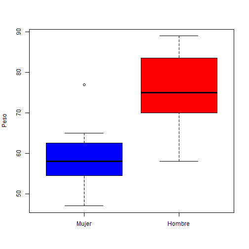

barplot, boxplot, pairs y gráficos múltiples
Esta función genera gráficos de barras en muy diversas formas.
para este ejemplo, se generan 100 números pseudoaleatorios de una distribución de Poisson de
parámetro λ = 5, se realiza un conteo de frecuencias y se representa con barras de diferentes colores.
tN <- table(Ni <- rpois(100, lambda=5))
r <- barplot(tN, col=rainbow(20))
Aquí tenemos otro ejemplo (extraído de
example(barplot)) de este gráfico que estudia los supervivientes al hundimiento del
Titanic por
clase y que nos sirve para conocer varios parámetros de la función.
d.Titanic <- as.data.frame(Titanic)
barplot(Freq ~ Class + Survived, data = d.Titanic, subset = Age == "Adult" & Sex == "Male", main = "barplot(Freq ~ Class + Survived, *)", ylab = "# {passengers}", legend = TRUE)
Esta función realiza gráficos de caja con bigotes (
box-and-whisker).
boxplot(Peso[Sexo=="M"],Peso[Sexo=="H"], notch=F,names=c("Mujer","Hombre"),ylab="Peso",col=c("blue","red"))

Podemos estudiar el rango en el que se mueven las variables a partir de un dataset.
En nuestro ejemplo, las mujeres tienen un peso entre 55 y 65kg,
mientras que el peso de los hombres oscila entre 70 y 80 kg.
Aquí tenemos otro ejemplo (extraído de
example(boxplot)) sobre la efectividad de diferentes
insecticidas para controlar plagas en agricultura.
boxplot(count ~ spray, data = InsectSprays, col = "lightgray")
Esta función, genérica, crea una figura que contiene todos los diagramas de dispersión de cada variable
frente a las restantes. La función está definida para las clases matrix, data.frame y formula.
Utilizaremos el ejemplo con los datos
h.datos2 que hemos leído antes.
Incluiremos en la diagonal del gráfico los histogramas referentes a cada variable.
panel.hist <- function(x, ...)
{
usr <- par("usr"); on.exit(par(usr))
par(usr = c(usr[1:2], 0, 1.5) )
h <- hist(x, plot = FALSE)
breaks <- h$breaks; nB <- length(breaks)
y <- h$counts; y <- y/max(y)
rect(breaks[-nB], 0, breaks[-1], y, col="cyan", ...)
}
pairs(h.datos2[1:4], panel=panel.smooth, diag.panel=panel.hist, cex.labels=1.5, font.labels=2)
Finalmente dibujaremos las correlaciones absolutas en los paneles superiores de tamaño proporcional a los valores.
panel.cor <- function(x, y, digits=2, prefix="", cex.cor)
{
usr <- par("usr"); on.exit(par(usr))
par(usr = c(0, 1, 0, 1))
r <- abs(cor(x, y))
txt <- format(c(r, 0.123456789), digits=digits)[1]
txt <- paste(prefix, txt, sep="")
if(missing(cex.cor)) cex <- 0.8/strwidth(txt)
text(0.5, 0.5, txt, cex = cex * r)
}
pairs(h.datos2, lower.panel=panel.smooth, upper.panel=panel.cor)
La correlación nos indica como de relacionadas están las variables del dataset entre sí.
Para el conjunto de datos utilizado, obtenemos mayor relación entre las variables
Peso y
Altura, lo que nos indica que una
variable depende en gran parte de la otra. Si la correlación es negativa, indica que la relación se establece de forma inversa.
Entre los argumentos de la función
par(), uno de ellos permite representar gráficos múltiples, el argumento
mfcol=c(m,n), consigue dividir el dispositivo gráfico en
m x n partes iguales para
poder presentar
m x n gráficos simultáneamente.
El argumento
mfrow rellena por filas mientras que
mfcol rellena por columnas la división.
par(mfrow=c(2,3))
x<-(1:10)
y<-(4:13)^3
plot(x)
plot(y)
plot(x,y)
plot(y,y^2)
plot(x,y^2)
plot(y,x^2)